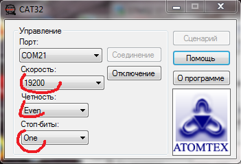

Настройка адаптеров АТ941 и АТ943 (старый)
посредством САТ32-БАРК
- Запустить CAT32_БАРК (/bin/release/Connections_automatic_tester.exe)
- Выбрать порт и следующие настройки: 
- В окне Сценариев установить следующие параметры
- Для того, чтобы узнать, какой адрес адаптера, нужно ввести такую команду:
- В поле сценариев скопипастить команду и нажать кнопку "Одну команду"
- В окне "Результат обмена" появится такой список:
- Одна из строк будет белой и с индификатором "ОК", это значит, что на запрос этого адреса адаптер ответил, остается посмотреть, какой адрес вызывался (на картинке стрелкой указано, где), на картинке это цифра 02, значит у адаптера второй адрес
- Для того, чтобы поменять адрес адаптеру, например со второго на первый, ввести такую команду (02 в начале
каждого кода — текущий адрес, 01 в конце каждого кода — номер адреса, т.е. вводить адреса нужно дважды,
после ">" и после "<"):
1 > 02 06 10 01 00 01 < 02 06 10 01 00 01
- Вот такой будет ответ:
- Здесь можно посмотреть список всех команд для Cat32
Подключить к выходу (клемники Х2) любой АТ1123

256 > [i=0-255] 03 10 01 00 01 < [x] 03 [LB]
(Иногда необходимо проверить только, например 5 адресов (когда точно известно, что адрес не больше пяти, но при этом не хочется ждать перебора всех 256-и адресов), тогда команда будет такой:
5 > [i=0-5] 03 10 01 00 01 < [x] 03 [LB]
)